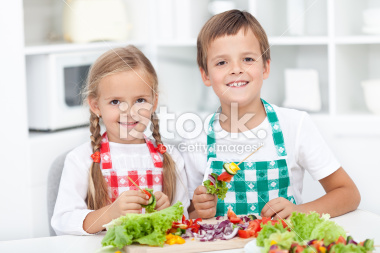
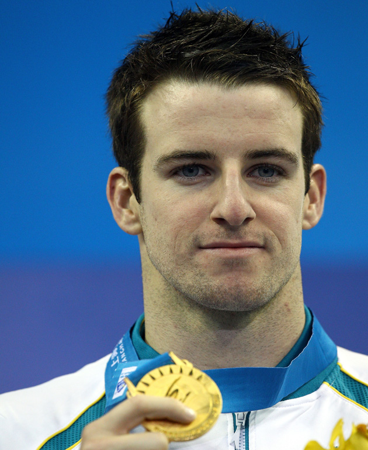
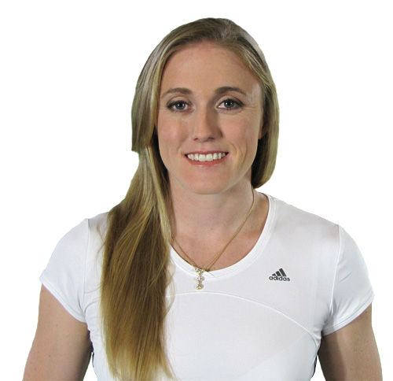
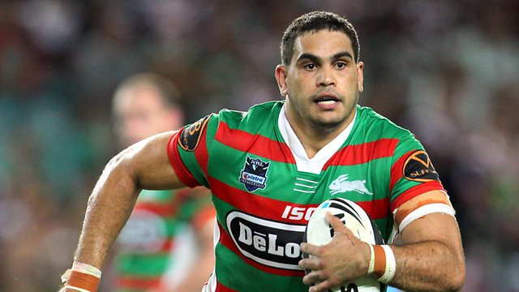

Healthy Eating Role Models
Hey kids! Here at StepUp we know that you guys dont like eating yucky vegtables and greens. They just dont taste the same as a donut or a packet of chips do they? Thats what you may think, but we are here to tell you its not true! Some of the best food is made with vegtables and fruits - most of your snacks are created from these flavours!
Some of the best athletes in the nation enjoy those very same fruits and vegatables, and look where it has got them! On this page, we have gathered some of our best athletes and asked them about what they eat and why. Have a read through, by yourself if your a champion reader! If you dont understand some words, ask a parent to explain them to you. Those old folk might even have some good ideas about healthy eating!
James Magnuesson
James is one of our most famous role models, having just competed in the London 2012 Olympic games. James is a swimmer, and needs to maintain a healthy diet at all times to keep his body at peak performance. Recently, James said "I'm pretty strict with my diet, it's filled with lots of healthy and nutritious meals, so I can't remember the last time I had a pizza! I usually eat food that is high in protein."
Whilst James's Diet is tailored to his profession, he shares some tips that any healthy eater can follow.
- Breakfast is usually of a bowl of oats with blueberries.
- Lunch is a piece of lean meat with a side of salad - a chicken salad wrap is always a good choice.
- For dinner I will usually cook either a piece of steak or fish with a good side of vegetables.
- For a snack I'll eat a handful of almonds and a small tub of yoghurt.
Sally Pearson
Sally Pearson is Australia's best 100m hurdler, and the current world champion as she won the Gold Medal in 100m Hurdles in the 2012 London Olympic Games. Like James above, She is an elite athelete, and must maintain a protein rich healthy diet to stay in top physical form. Sally was only 14 when she won the under 20 100m Hurdles title in the Australian Championships, and in 2011 was awarded the Female Athlete of the year award, the first Australian to win the honor. Sally places special importance on her diet, and recently said
"When I'm in competition season, I really need to look after myself and make sure I'm eating the right amounts. I tend to eat too much, so it's important I keep my portion sizes down."
For breakfast I usually have a bowl of cereal, for lunch it's usually a salad sandwich and for dinner it's meat and vegetables or meat and salad. I eat fruit for morning and afternoon tea.
Greg Inglis

Greg Inglis is one of the shining stars in the NRL, and plays for the South Sydney Rabbitohs. In 2009, he was awarded the Golden Boot for Rugby leagues worldwide best player, besting many international rivals. Like our other role models, he is an inspiration to many younger fans who follow the sport, and sets a fine example for both a moral leader and one who advocates exercise, especially in the indigenous community.
Greg himself admits his diet used to be less than ideal, and at one point he was deemed "overweight" due to his excessive consumption of Coke and White Bread, both of which are fine in moderation, but to excess can be detrimental to your health. Now, Greg follows a more healthy diet. Even though he is a sportsman like our other role models, he has a down to earth attitude about the food he eats Recently, Greg said that he's cut Coke and white bread completely from his diet.
"It's evil," "I now drink Coke Zero, and it's rye bread instead of white bread." Greg says that these days it's avocado on toast or scrambled eggs for breakfast.
Tips to Remember!
 Dont forget guys, if these meals are too hard to prepare, (or even remember!) just ask your parents to explain which foods are best for you.
Dont forget guys, if these meals are too hard to prepare, (or even remember!) just ask your parents to explain which foods are best for you.
You could even become a super healthy eater by remembering the essentials for a healthy diet, shown in the handy pie chart above. Try to remember at least 3 foods from each group!